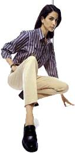

el mundo de los zapatos
CÓMO SE HACE UN ZAPATO
- Qué conocemos como un buen zapato?
- Cómo se hace un zapato?
- Las herramientas del zapatero
- El manual del zapato
LAS MEDIDAS Y EL PIE
- Toma de Medidas
- El pie: Contorno, longitud, anchura y volumen
- El pie: Huella y perspectiva
- El puente y las malformaciones más frecuentes
- Sistema óseo y musculatura del pie
- Numeración del ancho
- La documentación del pie
- Numeración del calzado (francesa, inglesa, americana y métrica)
LA HORMA
- Para qué sirven las hormas
- Zapatero a tus zapatos
- Las hormas simétricas y asimétricas
- Elaboración manual y preparación mecánica de una horma a medida
- Copia preliminar, definitiva y últimos toques de una horma
- El material de la horma
- Hormas a medida (método de sustracción adición y hormas corregidas)
- Características de las hormas, prueba y duración
TIPOS DE ZAPATOS
- El zapato a medida
- El zapato hace a la persona
- Moda en los pies
- Oxford
- Full-Brogue y semi-Brogue
- Blucher
- Los zapatos de verano
- El zapato formal de cordones y costura presuina
- El zapato formal de cordones y costura inglesa
- Los mocasines
- Mocasines a la italiana
- Monkstrap: El zapato con hebilla
- Los bicolores - clásico americano
- Sinónimo de impermeable
- Clásicos
- De Golf
- Botas
- * La bota - Su historia (Lic. Richard Danta)
- * Las Botas y su decoración: el siglo XlX (Lic. Richard Danta)
- * Las Botas y su decoración: el siglo XX (Lic. Richard Danta)
- * Una historia de la bota vaquera D. W. Frommer II
Traducción al Español: Licenciado Richard Danta
- El diseño
LA PALA
- El corte
- Accesorios de la pala
- Preparativos para la unión de las piezas de la pala
- El festoneado
- La perforación (brogueing)
- Decoraciones sobre la puntera
- Refuerzos en la pala
- El aparado de la pala
- Retoques finales
CUEROS Y PIELES
- La piel de la pala
- Cuero limpio
- El curtido
- Recurtido
- El curtido vegetal
- Boxcalf
- Piel bovina
- Pieles exóticas
- Cordobán
- Gama de colores y combinaciones de colores y piel
- La piel de la suela
- El forro de refuerzo
- El forro de la pala
LOS ZAPATEROS
- El taller de zapatería
- Los gremios de los zapateros
- La industrialización y sus consecuencias
FABRICACION Y ARMADO DEL ZAPATO
- El montado del zapato
- El zapato de vira cosida
- El zapato de cosido doble
- Las piezas inferiores y el corte
- La palmilla
- Preparación de la pala
- Contrafuerte del talón
- El engrudo
- El tensado
- El amartillado del zapato
- El cabo del zapatero
- El complemento de la vira: el revirón
- Aplicación de la suela
- La suela exterior y el marcado de los puntos
- La costura de la entresuela y de la suela exterior
- El tacón
- El parce de goma
- Pulido de la suela y del tacón
- Ornamentos de la suela y del tacón
- El deshormaje
- Últimos retoques en el interior del zapato
- Plantillas
- Hormas extendedoras, extendedores de tres piezas y con muelle
- El pulido final del zapato
- Cordones adecuados
- * Diseño artesanal de un mocasín indio
- * Sandalia artesanal
EL CUIDADO DEL ZAPATO
- La limpieza del zapato
- Diez reglas para el cuidado del zapato
- El arte de limpiar zapatos
- Tipos de hormas extendedoras
- El calzador
- Cuando el zapato aprieta...
- La reparación del calzado (reparación y sustitución de la media suela y el tacón)
El buen zapato
Siempre se ha dicho que los zapatos son la prenda más importante en el atuendo de un hombre. Y es realmente cierto.
Una vestimenta perfecta en todos los detalles se verá irremisiblemente arruinada si está acompañada por unos zapatos de mala calidad. Sería mejor ir por la vida descalzo o en calcetines y disculparse aduciendo motivos religiosos, o argüir el robo del calzado, antes de pasearse con unos zapatos baratos y perder toda respetabilidad. De todas maneras, unos buenos zapatos deben ir siempre acompañados de un buen atuendo, puesto que ni siquiera el mejor calzado del mundo podrían compensar un vestuario más bien pobre.
Aunque todo esto pueda parecer un poco exagerado, demuestra en cierto modo la importancia de los zapatos. Si usted no tiene la suerte de poder escoger lo mejor en cada detalle de su vestuario, debería entonces repartir su presupuesto de tal manera que la mayor parte de este vaya destinada a comprar unos zapatos de buena calidad. Todavía mejor si invirtiera todo su dinero destinado para ropa en calzado, puesto que como mínimo necesitará dos pares; después de llevarlos, los zapatos deben dejarse reposar como mínimo un día entero.
Volvamos al tema del presupuesto personal. Si para usted resulta importante ir bien vestido y de manera elegante, debe prever que hay que dedicar una parte considerable de sus ingresos y de su tiempo llibre a este fin. El buen estilo no es algo que caiga del cielo y son pocos los que crecen en un ambiente en el que el sentido del gusto les sea inculcado de manera natural. La mayoría de nosotros no llevábamos cuando éramos jóvenes lo mejor y más caro, de manera que al alcanzar la edad adulta teníamos un armario lleno de trajes y camisas a medida, las mejores corbatas y sobre todo, los mejores zapatos. Si usted tiene una serie de compras que realizar, y le interesa ahorrar un poco, debería trazarse un plan de acción y situar los zapatos en primer lugar. En muchas ocasiones, pueden pasar desapercibidos unos vaqueros, camisas y suéters de segunda clase si en los pies se calzan unos zapatos como Dios manda. Después podrá comprar trajes, americanas de sport, corbatas y abrigos. Pero lo más importante es que antes ya tenga en su vestuario un buen surtido de zapatos con carácter. Sin embargo, la falta de dinero no suele ser la razón principal por la cual el calzado de la mayoría de los hombres están en un estado tan deplorable. La verdadera razón es la falta de estilo, junto con el establecimiento de unas prioridades que confieren un elevado valor a todas las cosas imaginables, a excepción de las más evidentes. Y, ¿qué hay más evidente que unos buenos zapatos que llevamos en los pies durante media vida y con los que nos deleitamos durante muchos años? Por supuesto, resulta obligado aclarar qué son el realidad unos zapatos de calidad, cómo se los puede reconocer y dónde se pueden comprar.
Unos zapatos siempre serán buenos si están hechos de la mejor piel y con una buena parte de trabajo artesanal. Estos criterios son válidos para todos los zapatos, para mocasines y modelos de cerquillo cosido. Los modelos de cerquillo ofrecen el máximo de comodidad y resistencia. Más adelante nos ocuparemos de cómo deben ser confeccionados unos buenos zapatos. En primer lugar debemos aclarar cómo podemos reconocerlos y cuáles son las características que nos ayudan a distinguirlos. De hecho, no resulta tan sencillo diferenciar a primera vista un zapato de calidad de uno mediocre, a menos que muchos años de experiencia hayan dotado al comprador de un sentido especial para ello. Sin embargo, incluso de esta manera resulta difícil reconocer qué aspecto tendrá la piel después de uno, dos o diez años, cómo estará confeccionado el interior del zapato y con qué procedimientos se habrá elaborado. Por este motivo, es muy recomendable guiarse al principio por dos criterios: el precio y la marca.
Al contrario de los prejuicios que se han extendido, una buena marca de zapatos siempre supone una garantía de buena calidad. Un mal producto sólo se puede vender a un cliente una sola vez y las buenas marcas de zapatos llevan como mínimo veinte años en el mercado, algunas de ellas incluso desde hace más de un siglo.
Si usted se dispone a ir a comprar unos zapatos de buena calidad, en primer lugar debería memorizar algunos de los nombres de más prestigio. Los fabricantes de zapatos de cerquillo cosidos importantes son: Church's, Allen-Edmonds, Alden, Tricke's, Foster & Son, Edward Green, John Lobb París, Ludwig Reiter, Crockett & Jones, Cheaney, Lotusse. Hay una larga lista de otras empresas que hacen buenos zapatos, pero hemos citado las marcas de primera línea y que pueden encontrarse sin problemas en la mayoría de grandes ciudades de todo el mundo. El orden no es arbitrario sino que refleja una valoración La clase media alta empieza en Crockett & Jones.
En el caso de los mocasines debe establecerse una diferencia entre los mocasines americanos y los italiano. Los mocasines americanos son zapatos más bien prácticos, de uso diario y sin pretensión de ser elegantes. Fíjese en las marcas Allen-Edmonds, Bass, Sebago, Timberland y Florsheim. Por supuesto, en Estados Unidos existen más marcas, pero la mayoría no se exportan. Las marcas italianas que merecen la atención son Gucci, Moreschi, Gravati, Fratelli Rosetti y J.P. Tod's.
Si usted se encuentra en una zapatería especializada con una marca de la que no ha oído hablar y que también resulta desconocida para amigos suyos más entendidos en zapatos, hará bien en desconfiar. Si bien es verdad que existe una serie de pequeñas marcas regionales que pueden ser muy buenas, como por ejemplo J.B. Weston en Francia, Wildsmith en Reino Unido o Harai en Alemania, siempre existe el peligro de topar con un producto "sin nombre". Si no se trata de una oferta especial siempre es mejor invertir el dinero en una marca de prestigio, al menos que estemos muy seguros de haber dado con una auténtica revelación. En ese caso, se pueden comprar a modo de consuelo tres pares de reserva ya que nadie tiene nunca zapatos suficientes, y además los zapatos nuevos si se guardan en el lugar apropiado se conservan bien de forma casi ilimitada. Si establecemos una clasificación de las marcas según su país de origen obtendremos la siguiente lista:
- Estados Unidos
1. Allen-Edmonds
2. Alden
3. Bass
4. Sebago
5. Timberland
6. Florsheim
- Reino Unido
1. Church's
2. Tricker's
3. Foster & Son
4. Edward Green
5. Crockett & Jones
6. Cheaney
- Italia
1. Gucci
2. Moreschi
3. Gravati
4. Fratelli Rosetti
5. J.P. Tod's
- Francia
1. John Lobb París
- España
1. Lotusse
- Austria
1. Ludwig Reiter
A partir de esta lista podemos deducir en qué países existe una buena confección de zapatos. Estados Unidos, Reino Unido e Italia son grandes "naciones zapateras", no sólo se confeccionan espléndidos zapatos sino que además se lucen con auténtico entusiasmo. España, Francia o Bélgica son países que igualmente saben apreciar un buen par de zapatos. También Hungría pisa fuerte en este ámbito, por ejemplo con los zapatos hechos a mano de László Vass. Seguramente, a más de uno se le habrán pasado las ganas de ir a una zapatería vistos los elevados precios y las largas listas de nombres relevantes. Sin embargo, como remedio es recomendable ir primero a una casa especializada. Tome un par de zapatos Church's o Alden y obsérvelos bien. Podrá ver de que manera se han cuidado todos los detalles. A menudo, el propietario de la tienda, o los mismos vendedores sueles llevar zapatos Church's, Alden o de cualquier otra marca comparable y con un poco de suerte, será un modelo ya viejo pero bien cuidado que habrá adquirido carácter y que le permitirá comprobar que realmente vale la pena desembolsar dino por unos buenos zapatos.
CÓMO SE HACE UN ZAPATO
La horma de un zapato de fabricación industrial sólo puede elaborarse a partir de unos valores medios que suelen dar muy buenos resultado. Por ejemplo, en Church's existen hasta seis anchuras distintas para cada modelo. La mayorís de los hombres encuentran lo que necesitan. En los zapatos de fabricación industrial las plantillas se cortan a la medida adecuada con ayuda de una máquina para minimizar la pérdida del material. Los zapateros a medida cortan las suelas una a una.
Después de que la plantilla haya sido fijada a la horma se pega una fina cinta de piel, la pestaña del hendido. A ella se coserá más tarde el cerquillo y la pala. Por eso, el zapato de cerquillo cosido es estable y flexible. La pestaña del hendido puede igualmente elaborarse a partir de la plantilla. Así proceden también los zapateros a medida, pero estos trabajan normalmente sin máquinas y separan la pestaña del hendido de la plantilla.
Dos plantillas con pestañas del hendido grabadas y dobladas hacia arriba. En Church's se puede optar en la fabricación industrial por esta alternativa de pestaña del hendido pegada. Mientras se preparan las plantillas y las pestañas del hendido los cortadores cortan las partes de la pala. para ello es necesario los patrones para cada una de las partes de ésta.
Los closers cosen las partes de la pala, con pespuntes y tachones, en parte a mano, y unen la pala con el forro. En los zapatos de calidad el forro es de piel de cabra o tela. La pala dispuesta sobre la horma se fija provisionalmente y se cose a la pestaña del hendido y al cerquillo. Este es el paso decisivo en el arte de la confección a medida de estos zapatos. Lo maravilloso es que una sola costura une la pala, la pestaña del hendido y el cerquillo.
La costura que pasa por la pala, la pestaña del hendido y el cerquillo se entabla en el talón. De manera que bajo el talón no se cose la suela en el cerquillo, sino que se sujeta con clavos desde dentro a través de la plantilla junto al tacón. Puesto que el cerquillo, tal como indica su nombre, circunda la plantilla, queda un vacío cuando se coloca la suela exterior. Este espacio hueco se rellena con una masa compuesta de corcho y resina en la que el pie encuentra un lecho perfecto sobre el que descansar.
La suela exterior se cose al cerquillo mediante una máquina. La costura que se puede ver bajo la suela es la misma costura que une la suela y el cerquillo, pero no hay que temer que la suela se desprenda si la costura se deshace. El tacón de un zapato de cerquillo cosido se compone de cuatro a cinco capas de piel colocadas una encima de la otra según la altura del tacón. Entre la última y la penúltima capa de piel se coloca una capa de goma puesto que es el lugar donde el tacón se desgasta más.